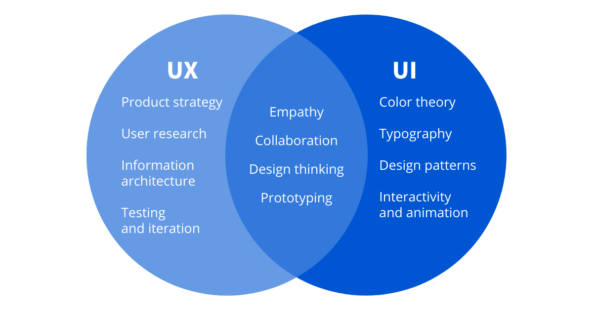
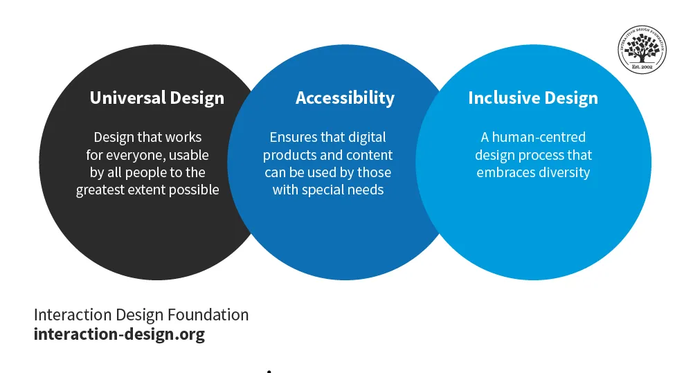

Syllabus
Design, develop and implement a progressive web app (PWA), including:
- the application of design and user interface (UI) and user experience (UX) principles of font, colour, audio, video and navigation
- a UI that considers accessibility and inclusivity
Learning Intention and Success Criteria
Learning Intention - Students will:
- understand how to design and develop a Progressive Web App (PWA) with a focus on applying user interface (UI) and user experience (UX) design principles, ensuring accessibility and inclusivity.
Success Criteria - Students can:
- design and implement a PWA that applies key UX/UI principles, including effective use of fonts, colors, multimedia, and clear navigation.
- create a user interface that is accessible to all users, with features such as screen reader compatibility and inclusive design elements.
Content
A Progressive Web App (PWA) is a hybrid between a web application and a native mobile application. It uses modern web technologies like HTML, CSS, JavaScript and APIs to provide an experience similar to that of a traditional native app, but it is accessible through a web browser without needing to be downloaded from an app store. The “progressive” part refers to its ability to enhance functionality depending on the device and browser capabilities.
PWA Key Features
- Progressive: It works for every user, regardless of browser choice, as it’s built with progressive enhancement at its core.
- Responsive: It fits any form factor — whether on desktop, mobile, or tablet — using responsive design techniques.
- Offline Capabilities: Through Service Workers, PWAs can cache essential resources and operate even when the device is offline or has poor network conditions.
- App-like Feel: PWAs mimic the look and feel of a native app using the app shell model. This means fast, smooth transitions between screens and a consistent experience.
- Installable: Users can add the PWA to their home screen without visiting an app store. Once installed, it behaves like a standalone app, launching in its own window without the browser UI.
- Secure: PWAs are always served over HTTPS, ensuring that the content delivered is safe and tamper-proof.
Developing a PWA differs from a traditional full stack by heavily focusing on client-side capabilities like offline access and a UI accessible across various devices, using technologies like service workers and responsive design. In contrast, traditional full-stack apps rely more on server-side logic and consistent internet connectivity.
From a practical and development perspective, a PWA generally includes the following key features:
UI/UX Principles
When designing a PWA, it’s crucial to create an interface and experience that is not only visually appealing but also intuitive and user-friendly.
UI vs UX
UI (User Interface) refers to the visual elements and layout that users interact with, such as buttons, icons, and menus, while UX (User Experience) focuses on the overall feel and usability of the app, ensuring that interactions are intuitive, efficient, and enjoyable for the user.
Fonts
- Readability: Select fonts that ensure readability across various devices and screen sizes. Avoid overly decorative fonts that might reduce legibility, especially on smaller screens.
- Web-safe Fonts: Use fonts that are either available on most devices (like Arial, Verdana, or Times New Roman) or utilise web fonts from libraries like Google Fonts. Ensure they are lightweight to maintain performance.
- Consistency: Maintain font consistency across the app by limiting the number of typefaces and styles. Use font hierarchies (e.g., larger fonts for headers, smaller for body text) to guide users.
Colour
- Contrast: Ensure sufficient contrast between text and background colours to make content readable, especially for users with visual impairments. You can use tools like WCAG colour contrast checkers to verify accessibility.
- Branding and Visual Identity: Use colour schemes that align with your app’s branding and purpose. Colours evoke emotions; for example, blue conveys trust, while green suggests growth or success.
- Colour Psychology: Consider how colour impacts user perception. Choose your palette based on the emotions or actions you want to encourage.
- Accessibility: Ensure colour-blind users can navigate and understand the app by avoiding colour-dependent actions (e.g., only using colour to convey meaning). Incorporate additional visual cues such as icons or text.
Audio and Video
- Appropriate Use: Use multimedia elements like audio or video to enhance the user experience without overwhelming the interface. For example, videos can be used for tutorials, but they should not auto-play with sound, which can disrupt user experience.
- Performance Considerations: Multimedia should be optimised to reduce loading times. Use techniques such as lazy loading and responsive media queries to ensure smooth performance on all devices.
- Accessibility: Provide captions for videos and transcripts for audio to make the content accessible to users who are deaf or hard of hearing.
Navigation
- Intuitive Structure: Simplify navigation so users can easily find what they need. Follow the “three-click rule” — users should reach any part of the app within three taps or clicks.
- Consistent UI Patterns: Use familiar patterns such as hamburger menus, tabs, and bottom navigation bars to make navigation intuitive.
- Sticky Elements: Consider using sticky navigation bars that remain visible as users scroll to give them easy access to primary navigation options.
- Interactive Feedback: Provide clear feedback when a user interacts with navigation elements, like button animations or visual cues (hover effects, loading indicators).

Accessibility and Inclusivity
Accessibility ensures that your PWA can be used by as many people as possible, including those with disabilities. Inclusivity means that the app design takes into account different cultural backgrounds, devices, and levels of ability.
Accessibility
- Screen Reader Support: Ensure your app’s content is compatible with screen readers. Use semantic HTML (e.g., <header>, <nav>, <article>, etc.) to structure your app properly. Provide alt text for images and make sure every actionable element is keyboard-accessible.
- Keyboard Navigation: Users who rely on a keyboard or other input devices should be able to navigate through the entire PWA. Elements such as buttons, links, and form fields should be focusable using the keyboard (using the tab key).
- ARIA (Accessible Rich Internet Applications): Use ARIA attributes to enhance accessibility, especially for dynamic content. For instance, aria-live can alert users of important updates, or aria-expanded can indicate if a dropdown is open.
- Contrast Ratios: The Web Content Accessibility Guidelines (WCAG) recommend a contrast ratio of 4.5:1 for normal text and 3:1 for large text to ensure readability for visually impaired users.
- Forms and Labels: Always associate form inputs with labels so users relying on screen readers can understand what information is being requested.
Inclusivity
- Language Support: Provide language options for international users. Ensure the app can switch seamlessly between different languages and that text expansion (in languages like German or Arabic) is accounted for.
- Cultural Sensitivity: Avoid using icons, symbols, or colours that could be misinterpreted across different cultures. For example, the colour red may mean “danger” in some cultures, but in others, it signifies celebration or good luck.
- Diverse User Needs: Design for different physical and cognitive abilities. This might involve simplifying complex tasks, providing visual and text cues, or giving users the option to adjust font sizes and contrast settings.
- Flexible Interfaces: Allow users to customise the app to suit their needs, such as changing font sizes, colour schemes (dark mode), and enabling or disabling animations.

Activity
Practical